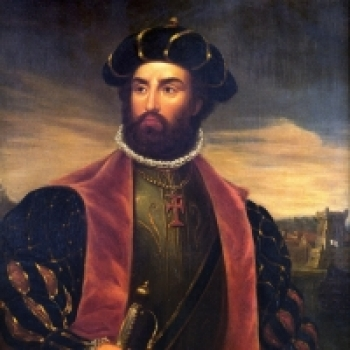

No dia 21 de agosto de 1898, sessenta e dois idealistas,brasileiros e portugueses ligados à colônia portuguesa radicada na Cidade do Rio de Janeiro, reuniram-se no salão do sobrado da Rua da Saúde, n.º 293 (atual rua Sacadura Cabral, n.º 345) decididos a fundar um clube destinado à prática do remo. Inspirados nas celebrações do IV Centenário da Descoberta do Caminho Marítimo para as Índias, os fundadores batizaram a nova agremiação com o nome do heroico português que alcançara tal feito. Nascia, então, a grandiosa trajetória do Club de Regatas Vasco da Gama.

O Vasco da Gama, foi o primeiro clube brasileiro à aceitar negros em seu elenco, ficando fora da disputa do campeonato carioca por 17 anos por conta disso. Além disso, o clube tem participação direta em vários direitos trabalhistas existentes ainda hoje no Brasil, por esse motivo, a história do Vasco é considerada por muitos como a mais bonita do futebol Brasileiro.